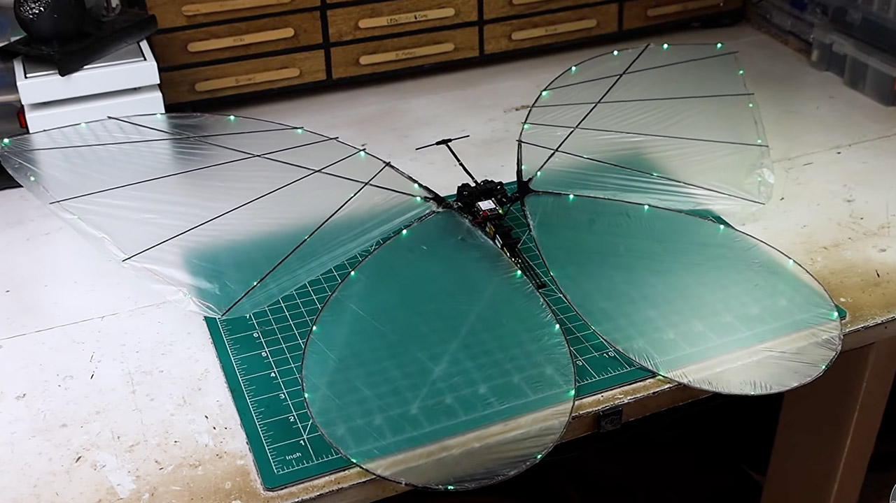

The projectWhat I am building
A servo-driven ornithopter — no propellers, just two flapping wings.
Every gram counts. The frame must stay light.
Longest single flight so far: 1 min 9 s.
Flown from a phone: join Butterfly_RC, open 192.168.4.1 — no app.
Two SDS1601 servos, one per wing, steered by flapping harder on one side.

Build: two versions exist (modular perfboard, and a compact 4-layer PCB). I am building the PCB version.
The askWhat I need printed
One small job on your Bambu Lab P2S — the frame. That is the whole ask.
| Part | Material | Notes |
|---|---|---|
| Frame parts | PETG | Body, servo mounts, brackets. |
| Guards & hinges | TPU 95A | Flexible parts that protect the servos in a crash. |
| Total | — | 30–60 g of plastic. Everything fits the P2S 256 mm bed with room to spare. |
Files: download the STL + STEP pack from Max's Cults3D page (link below). The full file list is on that page.
Not printed: the wings are NOT printed — they are produce-bag film on carbon rods, which I make myself.

MaterialsTwo spools — that is all
The P2S ships with a PLA sample only. This build cannot use PLA.
| Spool | For | Cost |
|---|---|---|
| PETG | Frame — rigid, light, strong. Runs through the AMS 2 Pro normally. | ~$25–30, a few dozen grams used |
| TPU 95A | Hinges & guards — soft, bends thousands of times. See the catch below. | ~$25–30, a few grams used |
Total filament cost ~$55–60 for both spools; if you already own PETG + TPU 95A, the job costs a few dollars of filament.
The one catchTPU 95A cannot go through the AMS
Soft TPU 95A will not feed through the AMS 2 Pro. Print those parts separately.
| Parts | How |
|---|---|
| PETG parts | Load PETG in the AMS 2 Pro and print normally. This is the bulk of the job. |
| TPU parts | Feed TPU 95A from the external spool holder, bypassing the AMS. Only a handful of small, soft parts — a short print. |
Why: the AMS feed path bends soft filament too sharply — it jams instead of feeding. The external spool feeds it straight into the extruder, which handles TPU 95A fine. This is the standard P2S workflow for soft TPU.
Print settingsUse Max's own settings
Straight from his Bambu Studio project — no guessing, no tuning.
| Setting | Value | Detail |
|---|---|---|
| Layer height | 0.16 mm | First layer 0.2 mm |
| Walls | 2 loops | Top 5 layers / 1 mm · Bottom 3 layers / 0.6 mm |
| Infill | 15% rectilinear | Surface density 100%, monotonic |
| Seam | Aligned | Precise wall off · One wall on top surfaces on |
| Supports | OFF | None needed |
| Prime tower / flushing | OFF | Flush into support: on · Flush into infill: off |
Source: “Print settings.jpg” in Max Imagination's project files (Google Drive). Material temperatures: use your usual PETG / TPU 95A profiles.
Division of labourYou print. I bring everything else.
The frame is the only thing I cannot make without a printer.
| Part | What it is | Cost |
|---|---|---|
| XIAO ESP32-C3 | The brain — Wi-Fi, servos, LEDs | $4.90 |
| 2 × SDS1601 digital servos | High-speed coreless, one per wing | ~$13 |
| 2S 220 mAh 45C LiPo | 7.4 V, ~5 min flight | ~$10 |
| WS2812B LED strip | ~50 LEDs along the wings | ~$6 |
| Flight-controller PCB | Custom 4-layer board, Gerbers in Drive | ~$2 |
| Carbon rods + produce-bag wings | Wing skeleton + film, cut and glued by me | ~$0 |
| 2S balance charger + soldering kit | Charger is mandatory — never USB-charge a bare 2S LiPo | ~$35 |
| First build, all-in (my cost, not yours) | I also do the soldering, firmware flashing, assembly and test flights. | $98 |
TimelineFrom print to first flight
Your part is quick — the whole print is a couple of hours at most.
- You print
PETG frame via AMS, TPU parts from the external spool. One short session.
- I collect
I pick up the parts and check fit against the servos and PCB.
- I assemble
Solder the XIAO + servos to the PCB, mount the frame, fit linkages.
- Wings + LEDs
Carbon-rod wing frames, produce-bag film, LED strip along the edges.
- First flight
Flash firmware, join Butterfly_RC from my phone, and fly it — indoors, calm air.
No deadline pressure — whenever your printer is free. A weekend print is perfect.
Links & filesEverything in one place
All of Max's files are free for personal / hobby builds (PolyForm Noncommercial licence).
- 3D files — STL + STEP (print these)Cults3D — ESP-FLUTTER body parts by Max Imagination. Linked from the video description.
- Project files — Gerbers, diagrams, wing templatesGoogle Drive folder (Max Imagination)
- Build tutorial — 52 min, step by stepYouTube — “Make an ESP32 RC Bionic Butterfly That Flies”
- Firmware + flashing guidegithub.com/maximagination1/ESP-FLUTTER
- My build guide — BOM, steps, gotchasgithub.com/builtbysai/papillon